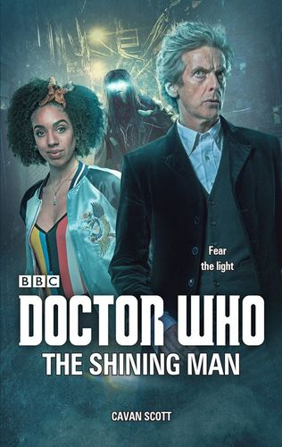

|
The Shining Man
|
BASIC PLOT DOCTOR COMPANIONS MATERIALISATION CIRCUIT PREPARATORY READING CONTINUITY REFERENCES Pg 20 "If you ever get less than a First, it's over..." The Pilot. We get a summary of that story. Pg 22 "Little Miss Sunshine versus the Sulky Skarasen." Terror of the Zygons. Pg 23 "Useful things, brollies. Always used to carry one, back when I was Scottish the first time around." The seventh Doctor. Pg 26 "'Grabbed you?' he repeated, running back up to her, his black and white electric guitar in hand." The guitar first appeared in The Magician's Apprentice. Pg 50 "He rummaged in his jacket pocket and pulled out a blue and silver device which whined as he swept it in the air, the green flashing at its tip." The sonic screwdriver (Fury From the Deep et al). Pg 51 "'Which Nessie do you hunt?' 'There's more than one?' 'I should know. I put them there.'" The Skarasen and the Borad (Terror of the Zygons, Timelash). Pg 55 "I am the President of the World, after all." Death in Heaven. Pg 63 "He fished a battered leather wallet from his jacket and flashed it in front of the woman's face." The psychic paper (The End of the World et al). Pg 74 "I had a friend who lived in a double-decker bus. She had a thing about leopard-print curtains and dancing hula girls." Iris Wildthyme (The Scarlet Empress et al). "I had a car called Bessie once." Doctor Who and the Silurians et al. "And a TARDIS called Sexy." The Doctor's Wife. Pg 83 "It's either UNIT or Torchwood." UNIT first appeared in The Invasion, while Torchwood first appeared in Army of Ghosts. "You're not the Forge are you?" From the DWM Comics. "What kind of screwdriver doesn't work on wood?" Silence in the Library/Forest of the Dead. Pg 92 "Doctor John Smith. UNIT." Spearhead from Space et al. Pg 93 "She knew he had his secrets - his mysterious vault back at the university, for one - but this didn't sound like him." The Pilot et al. Pg 96 "Nardole was the Doctor's factotum back at the university, a funny little man in every sense of the word." The Husbands of River Song et al. Pg 98 "No, sleep is for tortoises." The Talons of Weng-Chiang. Pg 103 "'What do you take me for?' 'The man who tried to nick a diamond on Saturn?'" Diamond Dogs. Pg 104 "The first rule is never forget the Wirrn repellant." The Ark in Space. "Librarians love me. Except for that lot in Alexandria, but the fire wasn't my fault. Ish." The Big Finish audio The Library of Alexandria. Pg 105 "'Lore of the Land by Amelia Rumford.' She opened it at random, finding a chapter on standing stones." The Stones of Blood. Pg 106 "'There's one in Harry Potter.' He shot her a grin. 'You wait to see what happens in book ten.'" The Shakespeare Code. Pg 107 "What about Amelia?" The Stones of Blood. Pg 110 "I mean, I had trouble believing in humans when I was a Time Tot, and yet here you are." Shada. "Remind me to ask Vastra if they were around in her day." A Good Man Goes to War et al. Pg 119 Reference to UNIT. Pg 155 "Not unless he's secretly a superhero or a Zygon." Terror of the Zygons et al. Pg 164 "Not everyone gets to wear the sonic sunglasses." The Magician's Apprentice et al. "Even had sonic lipstick once, althugh it wasn't really my shade. Gave it to a friend." The Sarah Jane Adventures. Pg 168 "She'd only been a baby when her own mum was taken awat from her. She'd never known her, the only memories the ones she'd made up." The Pilot through The Lie of the Land. Pgs 168-169 "There hadn't been any photos, until the Doctor changed all that, heading back into the past, armed with a total disregard for the laws of time and a SLR camera." The Pilot. Pg 180 "'You'e not going to jump.' 'It's either that or fly.'" City of Death. Pg 184 "Golden thread. John Dee would love that. Instant alchemy." Birthright, The Adventuress of Henrietta Street. Pg 187 "'That's your name isn't it? John Smith.' [...] 'Not exactly. It's a name I use from time to time.'" Spearhead from Space et al. Pg 241 "The magic flowed into her. It didn't do her any harm - and thankfully it didn't give her any superpowers. The world's had enough of that kind of thing recently." The Return of Doctor Mysterio. Pg 253 "Straight on past the boot cupboard and second door to the right." The Masque of Mandragora. "You know how Nardole likes to fuss around you." The Husbands of River Song et al. OLD FRIENDS AND OLD ENEMIES NEW FRIENDS AND NEW ENEMIES The Boggart known as The Lost.
CONTINUITY COCK-UPS PLUGGING THE HOLES [Fan-wank theorizing of how to fix continuity cock-ups] FEATURED ALIEN RACES Pg 166 Mushrooms with eyes. Pgs 167 Boggarts. They have hooked noses, wide mouths and jagged teeth, with skin the colour of mottled cheese and hait in long braids. Pg 191 A talking tree. Pg 218 The Fair Folk have blotchy skin, long clawlike fingers, conical heads with tight crimped hair and translucent wings. FEATURED LOCATIONS Pg 165 The Indivisible. IN SUMMARY - Robert Smith? |
|
 |